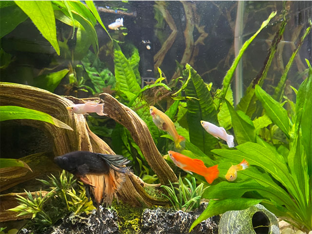
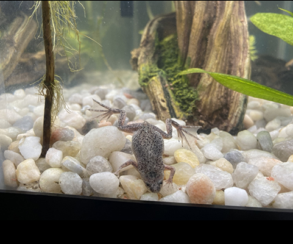

Picasso the Chihuahua
Picasso is a 2 year old Chihuahua, who was adopted from Animal Care Services.
Picasso spends his days trying to steal cat food and chewing on the edges of the couch.
Honey the Pitbull
Honey is a 1 year old Pitbull mix, who was a generous contribution from the Hernandez family.
Honey is just as sweet as her name implies and loves getting sprayed with the water hose.
Shiloh the Labrador
Shiloh is a 10 year old labrador mix, who was adopted from Animal Care Services.
Shiloh is one of our seniors who enjoys spending his days relaxing in the mud and barking at strange dogs.
Pepper the Corgi
Pepper is a 13 year old corgi mix, who was adopted from the Humane Society.
Pepper is very shy, but that does not stop her from defending her territory. Pepper enjoys soft foods and plenty of belly rubs.
Joji the Norwegian Forest Cat
Joji is a 3 year old Norwegian Forest cat mix, who was adopted from San Antonio Feral Cat Coalition.
Joji is a friendly cat who enjoys spending his time watching birds through the windows and sleeping in a glass bowl.
Mia the Siamese
Mia is a 2 year old Siamese mix, who was adopted from San Antonio Feral Cat Coalition.
Mia is a shy cat who spends her time laying on top of shelves, playing with balls and hiding when she hears a strange voice.
Betta fish, guppies and Hulk The African Dwarf Frog
 